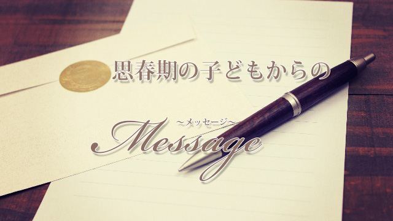

思春期の子を持つお母さんと話すと、以下のようなグチ（？）というか悩みを言いだす人が多い。
- 小学生までは素直だったのに、何だか妙に反抗的になったり、口をきかなくなったりする。
- 言葉使いが乱暴になったり、何を聞いても「別に～」と言ってすぐ部屋に閉じこもる。
- スマホにゲーム、友だちとカラオケやプリクラ通い。服装や髪形を気にし勉強に集中しない。
- 部活や生徒会で忙しそうで帰ってくると、しばらく寝そべったりダラダラ。部屋に入ったと思ったらLINEで友だちとおしゃべりに夢中。
- 親に言わず異性の友だちと出かけたり、頻繁に連絡がくるなど落ち着かない。
- 案の定、成績は落ち注意すると「今やろうとしてたのに…」とふてくされる。
しかし、まず最初に言っておきますがこれらの状態はまったく正常と言えます。
思春期の典型的な行状であって何も心配する必要はありません。
順調に成長している証拠です。むしろ安心してよい。
ところがそう言うと、たいていのお母さんたちは「えーっ、でもウチの子はホントひどいんです…」と主張し始めます。
まるで我が子がいかに特別反抗的か、素直じゃないか、普通の道から外れていて異常事態に陥っているか、一生懸命訴え始めるのです。
そして
「このままでは不良になるのではないか」
「成績がこれ以上落ちたら志望校に行けないのでは」
「こんなダラシないとダメ人間になるのでは」
「まさかイジメられてないだろうか」
と先回りして心配し始めます。
中には「私の育て方が間違っていたのでしょうか」と泣き始める人までいます（苦笑）。
まずコントロール欲求を手放す
いま上にあげたような行動は、全て子どもが順調に成長している証であって何も心配はないのです。
なのに何故親は、心配しイライラし不安になり、落ち込むのでしょう。
それは、第一に子どもが自分の思い通りにならない。
自分のコントロールが及ばなくなったからです。
親は、子どもが小さい頃から様々な命令や要求をしています。「あれしなさい」「コレしちゃダメ」「あれはもうやったの？」「ちがう！それは○○でしょ」など。
子どもが幼いときはそれは必要なことでした。
しかし子どもが思春期、反抗期に入っても同じことをしてしまいます。
「宿題はやったの」「塾に遅れずに行きなさい」「朝はもっと早く起きなさい」「ちゃんと返事しなさい」「スマホばかりやって何しているの」…等々。
このように四六時中、子どもに対し要求し注意（命令）しています。
親は子どもが心配だからといいますが、そしてこれらの要求命令が親の務めだと思っていますが、実際は子どもが以前ほど思い通りにならないことに不安と焦りと怒りを感じているのです。
そうして、不安と焦りと怒りが募るほど子どもはますます思い通りにならないという、負の連鎖がずっとループしていくわけです。
何が間違っているのでしょう。
どうすればこの「負の連鎖」から抜け出せるのでしょう。
答えはシンプルです。
親が変わること。
親であるあなたが子どもに対する見方を変えるしかないのです。
親が変われば子どもも変わる。
これをインサイドアウトの法則と言います。
あるいは、私独自の言葉ではペアレンツファースト（親が先）で、略してPFメソッドと呼んでいます。
子どもを師と思う逆転の発想
インサイドアウトとは、自分の内面を変える（物の見方を変える）ことで外側の現実も呼応して変わるという現象を指します。
よく「他人は変えられない。自分は変えられる。したがって自分が変わることで他人を気にならなくすることができる」という言葉を聞きます。
まっ、それと同じことですね。
たとえば、キライな人がいる場合たいていは自分の中にもそのキライな人と同じ面がある。
それを自覚したとたん、相手が変化したというのはよくあることです。
それを我が子との関係にも応用することができるわけです。
何度も繰り返しますが、最初にお母さんたちがグチっていた子どもの行動は、私たち専門家から見ると、全く正常な思春期の成長過程であってむしろ祝福（笑）に値するぐらいです。
だから、それにイライラしたり焦ったり、不安に思ったりするのは親の側（内面）にこそ問題があるということを認めなければなりません。
その上で、子どもが「思い通りにならない」のは、大人になる過程では当然の状態であると認識し自分が無意識に握りしめているコントロール欲求を手放すことが大事です。
子どもが心配だからというエクスキューズは全くいらないものです。ただちに捨ててください（笑）。
さて、そこでインサイドアウトですが、まずこれをやる前に言っておきたいのは、親の発想の転換です。
私たち親は、どうしても子どもが未熟であり導いてやらなくてはいけない存在だと思いがちです。
つまり上から目線なのです。
これを転換する。
するとこうなります。
子どもが師であり、自分（親）が導かれる存在である
親子の立場を転換したと考えても良いでしょう。
すなわち親である「あなたが子ども」で「我が子が親」であるということです。
それは、いったん「親としての仮面」を脱ぐ行為ともいえるでしょう。
この発想の転換は大切です。
なぜなら、私の前回の記事（子どもの思春期VS親の思秋期）で詳しく触れましたが思春期の子どもの親は、だいたいが40～50代で第2の思春期（思秋期）を迎えています。
子どもと同じくらい、アイデンティティが揺らいでいて心も不安定になりがちです。
子どもの思春期行動を観察する、あるいは子どもの目線に立ってみることはそれ自体が「忘れていた自分の思春期」を思い出すことであり、豊かな可能性に満ちていた自分を回復することにつながるからです。
インサイドアウトで劇的効果を
さて、子どもへのコントロール欲求を手放した。
上から目線の「親の仮面」も外した。
では、いよいよ子どもの言動を観察しましょう。
そして子どもの何にイライラし、不安になり怒りがわくのか見ていきましょう。
「子どもがなかなか勉強しない」→イラつく（焦る・怒る）
そのとき、親である「あなた」はどんな言葉をかけたいでしょうか。
たとえば「さっさとやれよ！」「そんなんじゃ入試に受からないよ」「将来困るぞ」だとします。
それならそれらの言葉を、そっくり自分に対して子どもから言われたと感じてみましょう。
「イヤな気持ちになるだろ。反省しろ」という意味ではありません。そのまま「自分が言われたメッセージ」だと感じてみてください。
どうでしょうか。
何か思い当たることはないでしょうか。
あなた（親）自身が、やるべきことを先延ばしにしていないか考えてみてください。
もしそういうものがあるとしたら何でしょう。
友人からランチに誘われていたけど返事を先延ばしにしていた（笑）とか、ダイエットのためにスポーツクラブに入会したのになかなか通えていないとか。
やるべきことをやらずにいて、それが心の中に引っかかっていないでしょうか。
「さっさとやれ」とか「将来困るぞ」とは実は、自分の内面が自分にこそ言いたい言葉ではないでしょうか。
つまり、子どものイライラさせる行動はむしろ自分が、向かい合うべきなのに向かい合うことを避けていることへのメッセージなのだ。
そう考えることで、自分（親）こそがいま何をすべきなのか自覚することができるのです。自覚したら実際に行動してみましょう。
すぐランチの約束をしてください（笑）。
この要領で楽しくやってみるのがコツです。
言いたい言葉が「ウソだけはついてはいけない」なら、あなた自身がウソをついたりつかれたことで困った経験があるのかも知れません。
そして今も、友人などに「思ってもいないお世辞」や「心にもない優しい言葉」をついかけてしまっている自分に気づくかも知れません。
つまり「もっと素直になりなさい」「もっと他人に心を開きなさい」というメッセージなのです。
このように、思春期の子どもの行動を問題視するのではなく、自分の行動の指針にすることで、すなわち自分の内面を変え、自分のするべき行動にフォーカスすることで、不思議なことに子どもの「不安定な問題行動」も改善されていきます。
あなた自身は直接子どもの問題に干渉しなかったにも関わらずです。
それは結果的に―あくまで結果として―子どもを信じて手放したからです。
こうしてみると、思春期の子どもこそは、親の気づきを促す上で宝の山だったという逆転劇となります。
前回の記事で、最後にこう書きましたが今回も結びの言葉としてこれで良いでしょう。
もし、あなたが自分の思春期を忘れているなら我が子から学ぶことができるかも知れません。
忘れていた思春期を思い出すことが、あなた自身の「生き直し」のヒントにつながるでしょう。